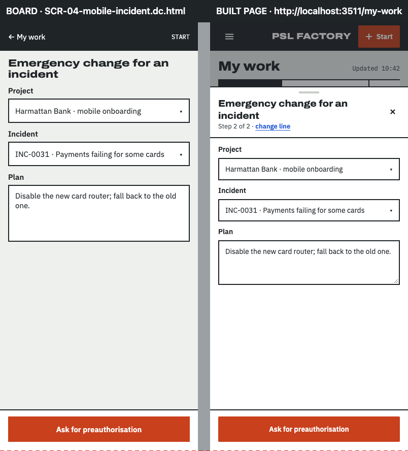
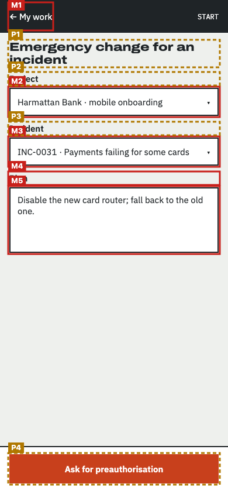
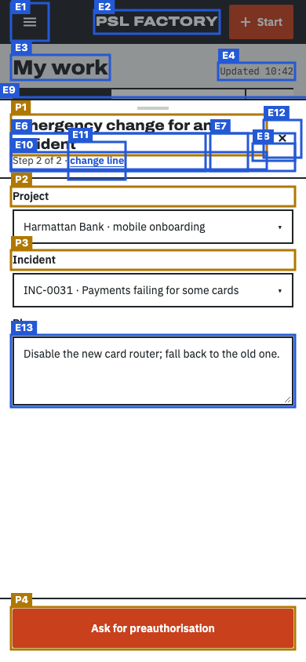
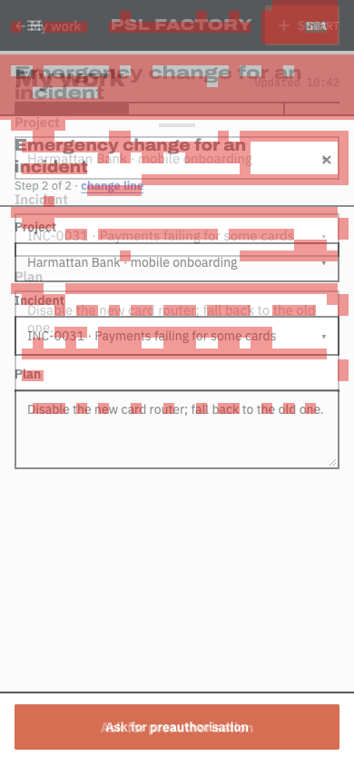

Does the built page follow the design?
Board SCR-04-mobile-incident.dc.html compared with http://localhost:3511/my-work at 390px wide · 2026-11-14T06:04:02.334Z
- Every board item is on the page or approved as an exception (100%).
- Visual match 77.2 is below 90.
- 4 item(s) are in a different place; review them (not part of the pass rule unless --strict-position).
5 of 10 things drawn on the board were found on the page: headings, buttons, links, search and filter controls, table columns, labels and the repeated rows (counted once, not per row).
How closely the shapes line up: blocks, bars, tables and text areas, compared in 12px squares over the top 844px. Different words in the same place still count as a match, so sample data does not lower the score.
Missing from the built page 5
Drawn on the board but not found on the page. Each one must be built, or approved as an exception.
| # | What | Text on the board | Where on the board | Exception |
|---|---|---|---|---|
| M1 | Link | ← My work | left, 6px down | approved Phone form is a bottom sheet for every line (design engineer, 14 Nov 2026). SCR-04-mobile-weekly, -minutes, -issue, -change, -incident, -escalation and -leadership draw a full-screen page whose bar reads "← My work" / "START"; the build opens the same content in the bottom sheet over My work, so that page chrome is not drawn. · Design engineer, 14 Nov 2026 (relayed by the delivery coordinator) |
| M2 | Text | Harmattan Bank · mobile onboarding ▾ | middle, 150px down | approved Text inside a form control: the board draws the shown value as static text; the tool names a combobox, text field or date field by its label, so the value it shows cannot be matched. · coordinator (overnight, provisional — see delivery/OVERNIGHT-DECISIONS.md D-16) |
| M3 | Text | INC-0031 · Payments failing for some cards ▾ | middle, 235px down | approved Text inside a form control: the board draws the shown value as static text; the tool names a combobox, text field or date field by its label, so the value it shows cannot be matched. · coordinator (overnight, provisional — see delivery/OVERNIGHT-DECISIONS.md D-16) |
| M4 | Text | Plan | middle, 295px down | approved Label of a native input: the build uses <label for>, which the tool skips (it names the input instead); the board draws a plain span. · coordinator (overnight, provisional — see delivery/OVERNIGHT-DECISIONS.md D-16) |
| M5 | Text | Disable the new card router; fall back to the old one. | middle, 320px down | approved Text inside a form control: the board draws the shown value as static text; the tool names a combobox, text field or date field by its label, so the value it shows cannot be matched. · coordinator (overnight, provisional — see delivery/OVERNIGHT-DECISIONS.md D-16) |
In a different place 4
Found on both, but in a different order, side of the page, or area (for example inside the table frame instead of above it).
| # | What | How it moved |
|---|---|---|
| P1 | Heading Emergency change for an incident |
|
| P2 | Text Project |
|
| P3 | Text Incident |
|
| P4 | Link Ask for preauthorisation |
|
Looks different 3
Found on both, but styled differently: table rows and cells, fonts, colours, underlines, outlines, corners. Not part of the score; check each one against the board.
| What | Difference |
|---|---|
| Text "START" |
|
| Heading "Emergency change for an incident" |
|
| Link "Ask for preauthorisation" |
|
On the page but not on the board 13
Built but not drawn. Some are expected (data, status lines); the rest need the design engineer to approve or remove them.
| # | What | Text on the page | Where on the page |
|---|---|---|---|
| E1 | Button | Menu | left, 6px down |
| E2 | Text | PSL FACTORY | middle, 15px down |
| E3 | Heading | My work | left, 72px down |
| E4 | Text | Updated 10:42 | right, 82px down |
| E5 | Search area | middle, 172px down | |
| E6 | Search box | Search | left, 172px down |
| E7 | Filter | Filter | right, 172px down |
| E8 | Text | 0 ITEMS | right, 185px down |
| E9 | dialog | Emergency change for an incident | middle, 126px down |
| E10 | Text | Step 2 of 2 · change line | middle, 196px down |
| E11 | Button | change line | left, 183px down |
| E12 | Button | Close | right, 155px down |
| E13 | Text field | Plan | middle, 429px down |
Pictures
The red dashed line on the side-by-side marks how far down the visual score looks. On the marked board, red boxes are missing items (M). On the marked page, amber boxes moved (P) and blue boxes are extra (E). In the difference picture both screens are laid over each other and red squares are where the shapes do not line up.






Notes about this run
No problems rendering the board or loading the page.
Found on both (5)
| Text | START | page: Start work |
| Heading | Emergency change for an incident | |
| Text | Project | |
| Text | Incident | |
| Link | Ask for preauthorisation |
How the scores are worked out
Element coverage. The board is drawn locally from its own template and sample data. From the drawn board the check lists everything a person sees or uses: page areas (navigation, main, search), headings, links, buttons, form fields with their labels, table column headers, filter, search and pagination controls and fixed labels. Rows drawn from sample data count once, as a pattern ("table rows with these columns"). Each item is looked for on the page by its kind and its words (ignoring capitals, curly quotes and small wording differences, at least 80% similar). Coverage is found ÷ drawn. Order is compared in reading order (top to bottom, left to right); an item is "moved" when it breaks the order, sits on the other side of the page, or sits inside a different area.
Visual match. Both full-page screenshots are compared in 12px squares after a light blur, over the board's height (844px; the page is 844px). Only squares with something in them count. A square matches when its colours line up, or when both have text or lines there. Score = matching ÷ counted squares (1692 of 2192). Over every square including empty background it would be 78.7.
Technical details
Board file: /Users/Hunchoo/psl-factory-worktrees/f-05/design/canvas/project/SCR-04-mobile-incident.dc.html
Viewport: 390×844
Report data: report.json
Exceptions file: /Users/Hunchoo/psl-factory/delivery/features/F-05/fidelity-exceptions.json